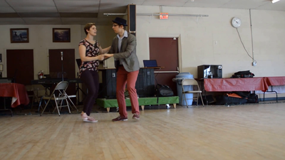
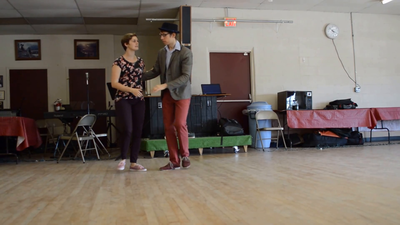
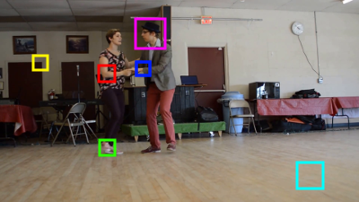
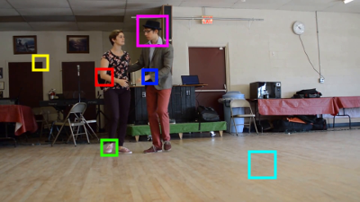

<div class="row">
  <div class="portfolio-item">
    <h3>PatchMatch</h3>
    <h4>A Linear Time Nearest Neighbor Field Approximation for Patch Correspondence in Images</h4>
    <br>
    <table style="width:100%;">
      <tr>
        <th>
	  <center>
	    
	    <br>Image A
	  </center>
	</th>
        <th>
	  <center>
	    
	    <br>Image B
	  </center>
	</th>
      </tr>
      <tr>
        <th><center><br><br>Image A Select Patches</center></th>
        <th><center><br><br>Image B Select Patches</center></th>
      </tr>
    </table>
    <br>
    <p>Finding correspondences between patches (small neighborhoods of pixels in an image) is useful in many graphics and vision applications such as optical flow, hole filling, or super-resolution. Naive exhaustive searches can be slow as they can be <i>O(n<sup>2</sup>)</i> where <i>n</i> is the number of pixels in any of our input images. PatchMatch is a linear time patch correspondence algorithm that approximates the optimal patch correspondences between two images. </p>
    <p>Source code: <a href="https://github.com/paul-tqh-nguyen/patchmatch">Github</a></p>
  </div>
</div>
